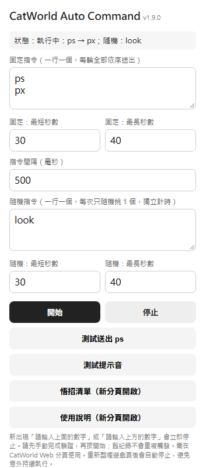
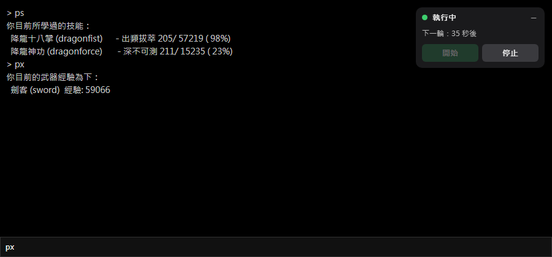
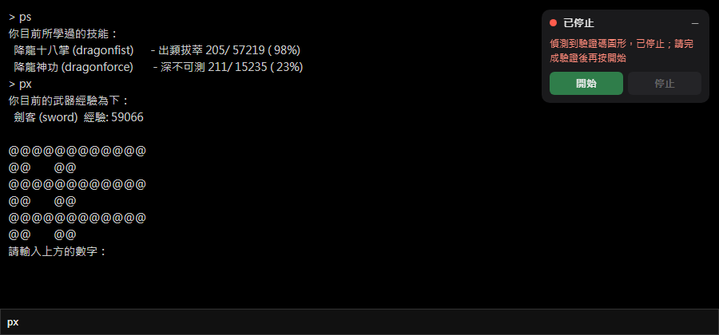

| 項目 | 說明 |
|---|---|
| 固定指令 | 一行一個，每輪全部依序送出。預設 ps、px |
| 固定：最短／最長秒數 | 每輪之間隨機等待的秒數範圍（預設 30～40） |
| 指令間隔（毫秒） | 同一輪裡兩個指令之間的間隔（預設 500） |
| 隨機指令 | 一行一個，每次只隨機挑 1 個送出，用自己的計時（最短／最長秒數另外設） |
| 開始／停止 | 設定會記住。開始時會先送出一輪 |
| 測試送出 ps | 不開始自動化，只送一次 ps，確認輸入框抓得到 |
| 測試提示音 | 播放一次提示音。被瀏覽器擋住時請先在遊戲分頁點一下再試 |
| 悟招清單 | 在新分頁開啟各武功的悟招條件與招式表 |
| 使用說明 | 開啟這一頁 |
使用說明
1. 安裝與更新（不需要 Node / git）
- 執行安裝指令，它會下載最新版、複製到固定資料夾，並嘗試開啟
chrome://extensions。Windows：開 PowerShell，貼上
irm https://raw.githubusercontent.com/austinchen705/chrome-extensions/main/install.ps1 | iex
macOS / Linux：開終端機，貼上
curl -fsSL https://raw.githubusercontent.com/austinchen705/chrome-extensions/main/install.sh | sh
- 在
chrome://extensions右上角打開「開發人員模式」。 - 第一次安裝：按「載入未封裝項目」，選指令印出的資料夾（預設
~/chrome-extensions/catworld-auto-command，路徑已複製到剪貼簿）。 - 打開（或重新整理）遊戲分頁
https://catworld.muds.tw/web。
改裝到別的資料夾：先設環境變數 CHROME_EXT_DIR（PowerShell：$env:CHROME_EXT_DIR = 'D:\tools\catworld'），再貼上面那行。這兩行都是「下載後直接執行」，只對你信任的來源這樣用。
更新
重貼同一行指令，會顯示「升級：vX → vY」，然後到 chrome://extensions 按該 extension 的「重新載入」，並重新整理遊戲分頁（content script 才會更新）。安裝資料夾會被整個換掉，不要把自己的檔案放在裡面。
其他安裝方式
已經有 Node.js（16.7 以上）與 git：npx github:austinchen705/chrome-extensions（參數 --dir <路徑>、--no-open）。更新後版本號沒變，是 npx 用了快取的舊版：到 npm config get cache 顯示的資料夾，刪掉 _npx 底下 package.json 含 austinchen705/chrome-extensions 的那個資料夾，再重跑。
完全手動：到 GitHub 下載 repo 的 ZIP，解壓後在 chrome://extensions 用「載入未封裝項目」選 catworld-auto-command 資料夾；更新時重新下載並覆蓋舊資料夾，再按「重新載入」。
2. 基本操作
在遊戲分頁點工具列的 extension 圖示打開設定，也可以直接用遊戲頁上的浮動面板開始／停止。


浮動面板：出現在遊戲頁上，顯示執行中／已停止與「下一輪：N 秒後」，可拖曳、按 – 收合，不會搶走遊戲輸入框的游標。紅點表示因驗證碼而停止。
重新整理遊戲頁會自動停止，不會偷偷繼續跑，需要再按開始。
3. 驗證碼：什麼時候停
自動化只在「執行中」才會偵測。以下任一情況成立就立刻停止並警報：
| 觸發 | 時機 |
|---|---|
文字提示：請輸入上面的數字／請輸入上方的數字 | 這段文字出現在遊戲內容的瞬間 |
圖形驗證碼（@ $ # % & * 字元圖，或彩色背景區塊組成的圖） | 圖形出現的瞬間：連續 5 行以上都是同一種符號 |
| 雜訊型驗證碼（一大塊英數字與色塊混合） | 連續 8 行以上、每行至少 30 字且含色塊時 |
| 無回應（兜底） | 送出指令後 8 秒內，遊戲沒有出現任何新的內容（自己送出的指令回顯不算） |
前三項看的是「新出現」的內容，舊的歷史紀錄不會重複觸發。
停了之後發生什麼
- 自動化立即停止，計時取消，之後不會再送出任何指令（包含「測試送出」），直到你重新按開始。
- 馬上響一次提示音，之後每 10 秒再響一次，最多持續 5 分鐘。
- 分頁標題閃爍「⚠ 需要驗證」，並跳出桌面通知（點通知會切回遊戲分頁）。
- 浮動面板變紅，顯示停止原因。
- 只要你回到遊戲頁（切到該分頁、點一下、按鍵）或重新按開始，提示音與閃爍就停止。

怎麼繼續
- 回到遊戲頁，自己輸入驗證碼完成驗證（本 extension 不會自動辨識或輸入驗證碼）。
- 看到驗證成功後，按浮動面板或 popup 的「開始」。
4. 常見問題
提示音沒響
瀏覽器在你還沒跟該分頁互動前會擋住聲音。開始自動化前先在遊戲頁點一下，並用「測試提示音」確認有聲音。
桌面通知沒出現
確認系統（Windows 的專注／勿擾模式、macOS 的專注模式）與 Chrome 沒有關掉通知。就算通知被擋，提示音、標題閃爍與面板仍會運作。
沒有驗證碼卻停了
面板會寫停止原因。若是「8 秒沒有收到遊戲回應」，通常是網路卡頓或遊戲沒回覆該指令；若是「偵測到驗證碼圖形」但畫面上不是驗證碼，請把那段遊戲輸出貼給維護者調整偵測規則。
驗證碼出現卻沒停
圖形偵測以「同一批新增的內容」為單位，若遊戲一行一行分批印出，可能不會當場命中，最晚由 8 秒無回應的兜底停下。請把那段輸出貼給維護者。